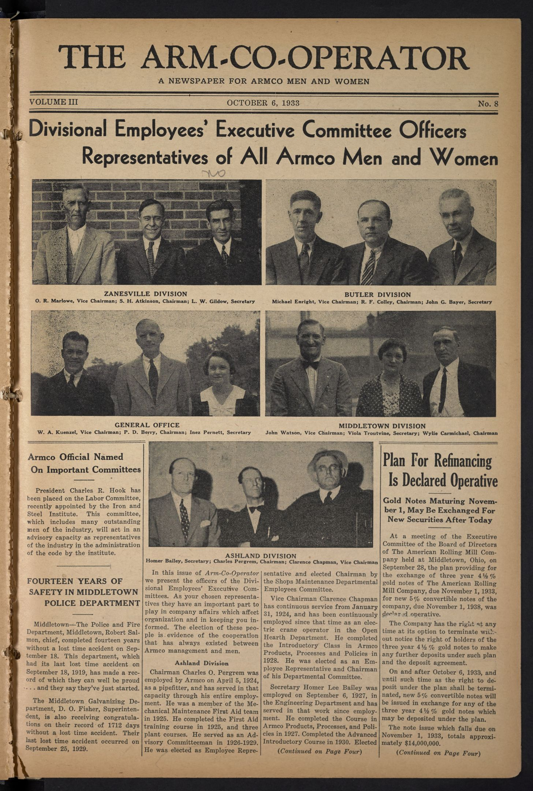
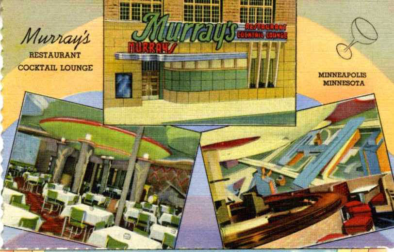
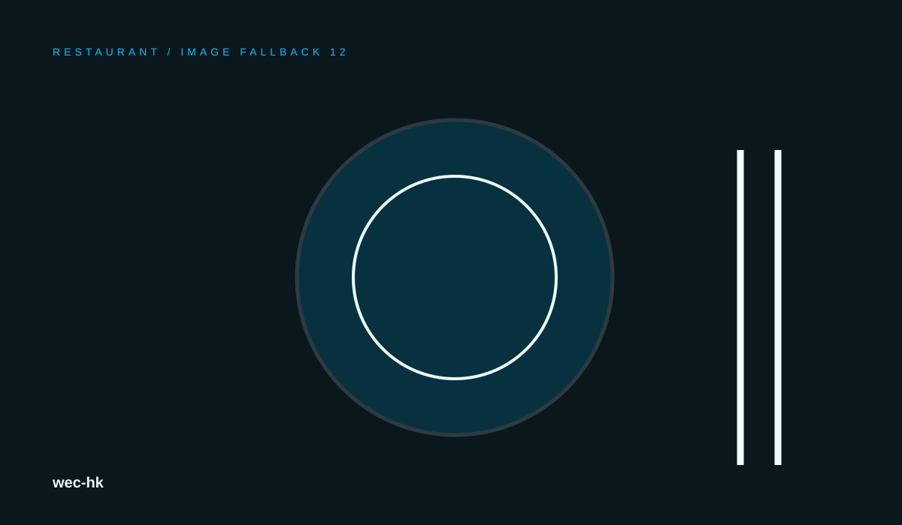

Menu
wec-hk is planned around guests planning dining experiences and special occasions. The experience stays locked to the restaurant category so copy, imagery, navigation and product language remain coherent.
Explore ↗RESTAURANT / MENU / EXPERIENCE
A hospitality-first restaurant experience with menu discovery, reservations, events, story and visit information.

wec-hk is planned around guests planning dining experiences and special occasions. The experience stays locked to the restaurant category so copy, imagery, navigation and product language remain coherent.

wec-hk is planned around guests planning dining experiences and special occasions. The experience stays locked to the restaurant category so copy, imagery, navigation and product language remain coherent.
wec-hk is planned around guests planning dining experiences and special occasions. The experience stays locked to the restaurant category so copy, imagery, navigation and product language remain coherent.
Explore ↗wec-hk is planned around guests planning dining experiences and special occasions. The experience stays locked to the restaurant category so copy, imagery, navigation and product language remain coherent.
Explore ↗wec-hk is planned around guests planning dining experiences and special occasions. The experience stays locked to the restaurant category so copy, imagery, navigation and product language remain coherent.
Explore ↗wec-hk is planned around guests planning dining experiences and special occasions. The experience stays locked to the restaurant category so copy, imagery, navigation and product language remain coherent.
Explore ↗wec-hk is planned around guests planning dining experiences and special occasions. The experience stays locked to the restaurant category so copy, imagery, navigation and product language remain coherent.
Explore ↗wec-hk is planned around guests planning dining experiences and special occasions. The experience stays locked to the restaurant category so copy, imagery, navigation and product language remain coherent.
Explore ↗A hospitality-first restaurant experience with menu discovery, reservations, events, story and visit information.
Read the story ↗These quotes are clearly presented as prototype feedback, not verified customer endorsements.
01“Clear, fast and easy to understand.”
02“The experience feels considered from the first screen.”
03“Every section helps us understand what comes next.”
Browse categories and key experiences.
Compare useful options without clutter.
Use stories, details and resources for context.
Move to the right next step with clear calls to action.
Find support and contact information without hunting.
This generated website is a professional prototype. Claims and business details should be verified before production use.
The site includes a dedicated support route and clearly labeled demo contact information.
Use the resources, stories and solution pages generated for this industry.
Yes. The generated layout includes responsive navigation, content grids and mobile fallbacks.
Customers should not depend on one hero button. V41 creates several useful entry points across the site.
wec-hk is planned around guests planning dining experiences and special occasions. The experience stays locked to the restaurant category so copy, imagery, navigation and product language remain coherent.
↗02wec-hk is planned around guests planning dining experiences and special occasions. The experience stays locked to the restaurant category so copy, imagery, navigation and product language remain coherent.
↗03wec-hk is planned around guests planning dining experiences and special occasions. The experience stays locked to the restaurant category so copy, imagery, navigation and product language remain coherent.
↗04wec-hk is planned around guests planning dining experiences and special occasions. The experience stays locked to the restaurant category so copy, imagery, navigation and product language remain coherent.
↗05wec-hk is planned around guests planning dining experiences and special occasions. The experience stays locked to the restaurant category so copy, imagery, navigation and product language remain coherent.
↗06wec-hk is planned around guests planning dining experiences and special occasions. The experience stays locked to the restaurant category so copy, imagery, navigation and product language remain coherent.
↗wec-hk is planned around guests planning dining experiences and special occasions. The experience stays locked to the restaurant category so copy, imagery, navigation and product language remain coherent.
Read stories ↗
Navigation, support, policy routes, structured content, responsive states and visual rhythm are treated as part of the product.
About the brand ↗